Energia em
cada aplicação.
Uma identidade visual para a Adrenalina Sport Bike, conectando o universo do ciclismo aos pontos de contato da marca. Símbolo, assinatura e grafismos percorrem a papelaria, o vestuário, os acessórios e os veículos.
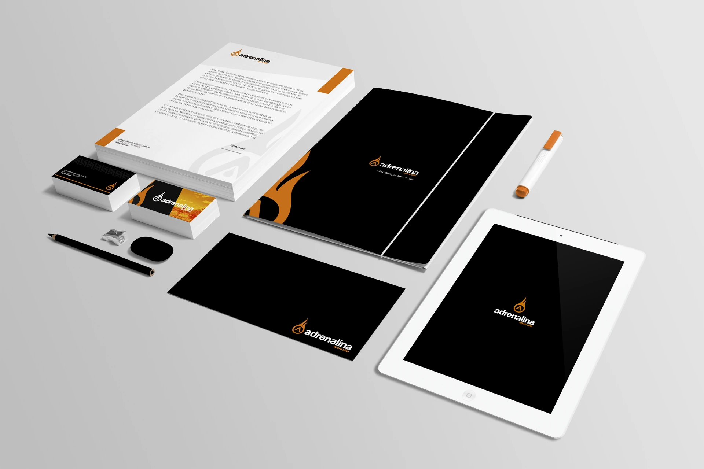
A mesma assinatura em diferentes formatos e superfícies.
Um símbolo.
Muitas formas de presença.
A chama envolve a letra A e aparece tanto ao lado do nome quanto isolada nas peças. Ampliado, o símbolo se torna um grafismo que atravessa camisetas, objetos e veículos.
O preto cria a base, o laranja concentra os pontos de energia e o branco dá contraste à assinatura. A tipografia ganha outra composição nas aplicações: as palavras “adrenalina”, “sport” e “bike” se sobrepõem em diferentes escalas.
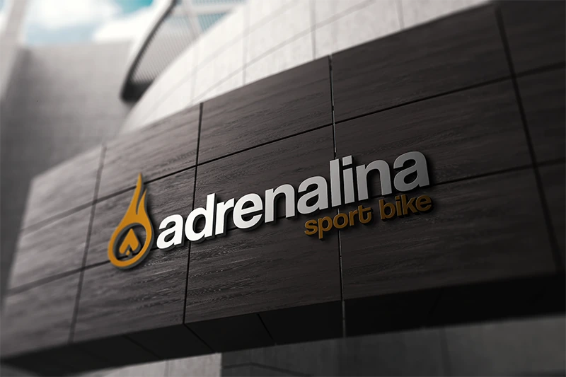
Assinatura em escala arquitetônica.
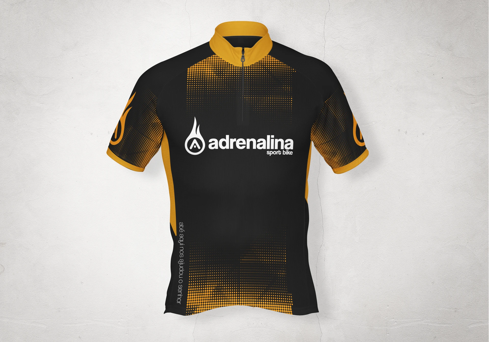
Cor, símbolo e retícula em movimento.
Uma identidade
para vestir.
Nas camisetas, o símbolo ampliado ocupa a lateral enquanto o nome alterna entre uma assinatura discreta e uma composição de grande escala nas costas. Nos bretelles, a marca acompanha o comprimento da peça.
Retículas, recortes de cor e versões compactas do símbolo conectam a camisa de ciclismo, os bretelles, as luvas e o boné. A mesma linguagem também aparece no uniforme polo.
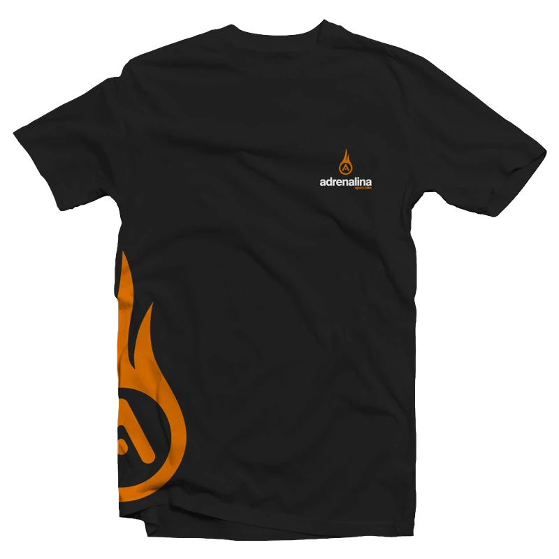
Assinatura compacta e símbolo ampliado.
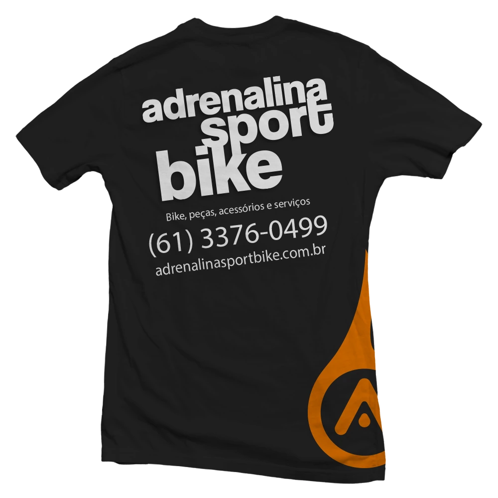
O nome como elemento de composição.
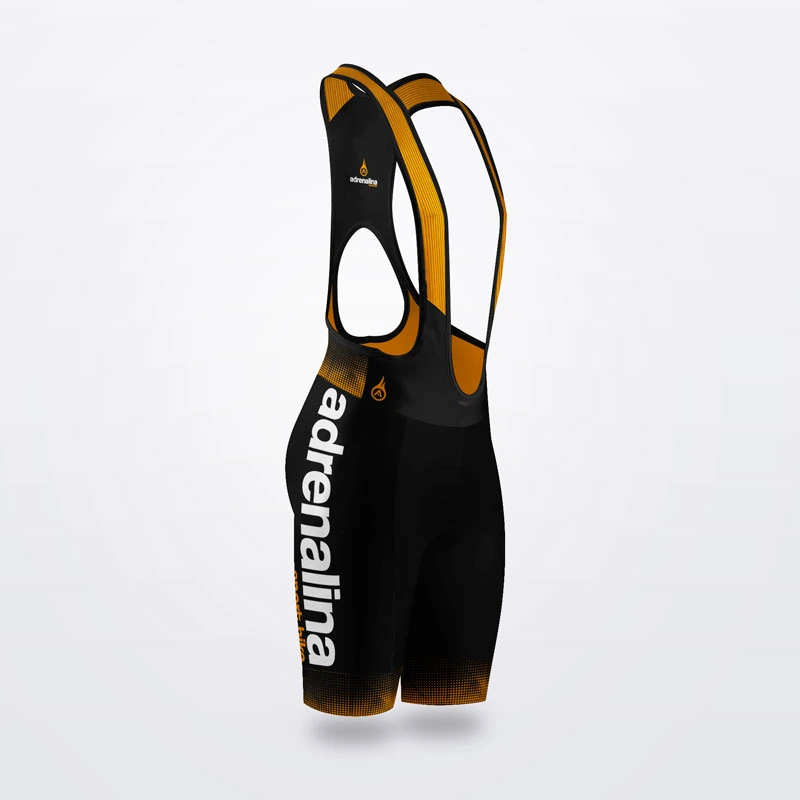
A marca acompanha a estrutura da peça.
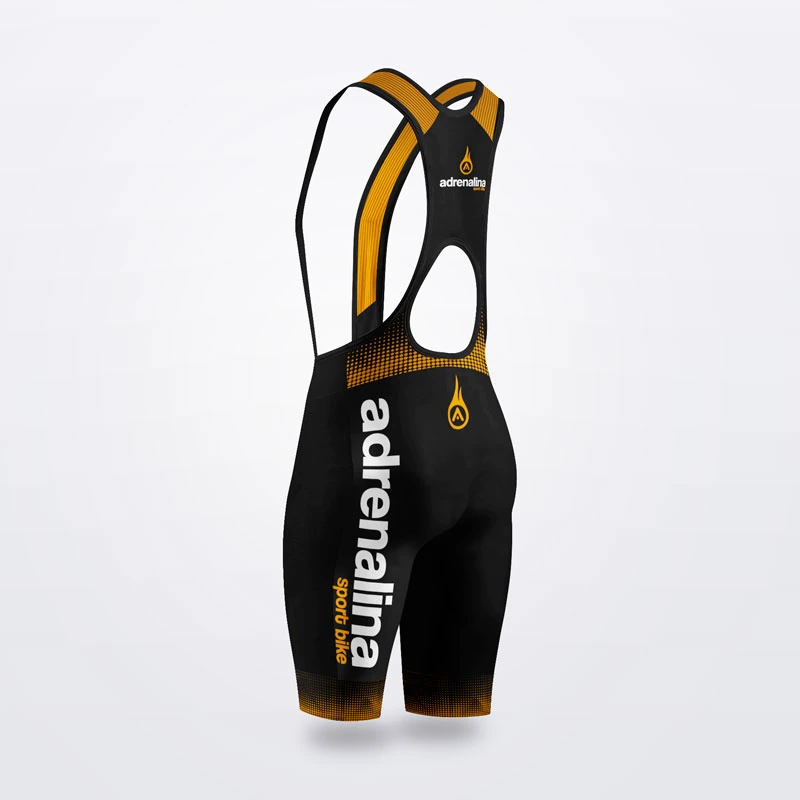
Continuidade entre frente e verso.
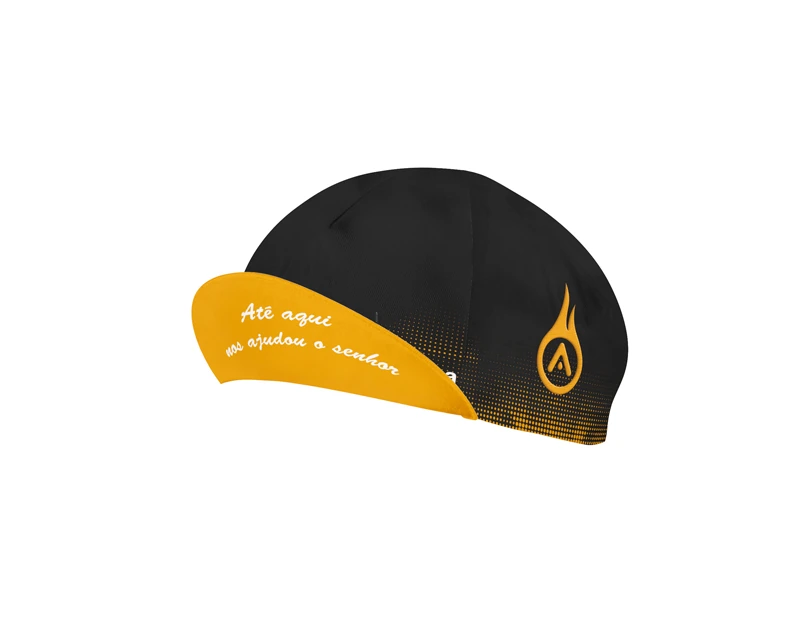
Cor e símbolo nos detalhes.
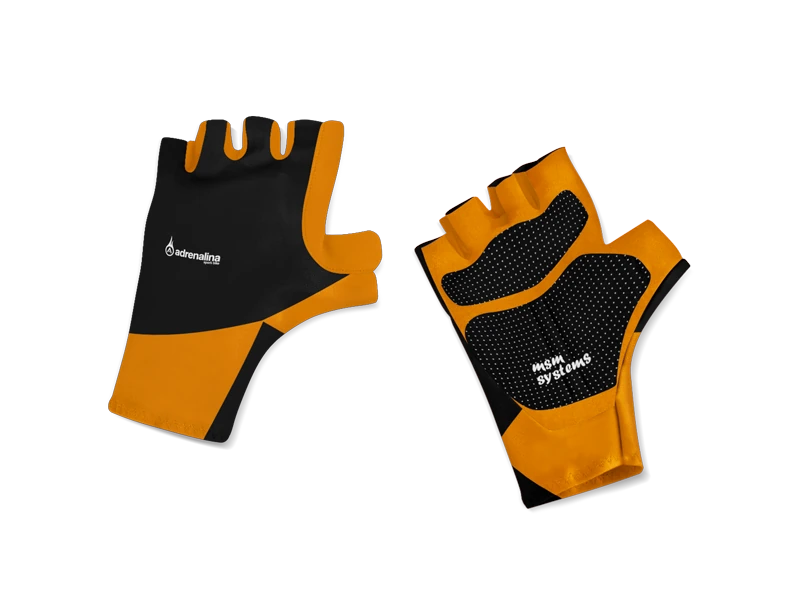
Variação de cor entre faces.
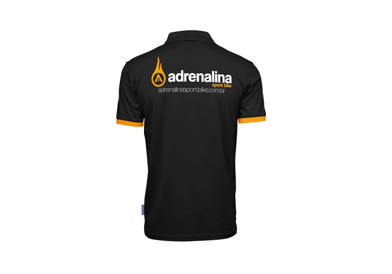
Uma aplicação para a equipe.
A mesma assinatura.
Em outra escala.
As duas propostas de aplicação no caminhão alternam o protagonismo do preto e do laranja. O símbolo ocupa a lateral do baú, junto à composição tipográfica ampliada; na cabine, a assinatura aparece em uma escala menor.
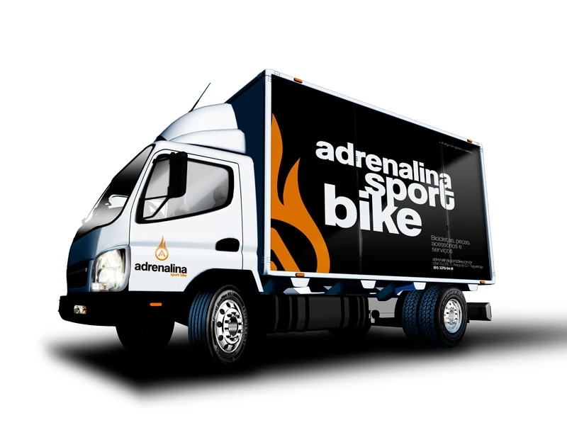
Tipografia branca sobre fundo escuro.
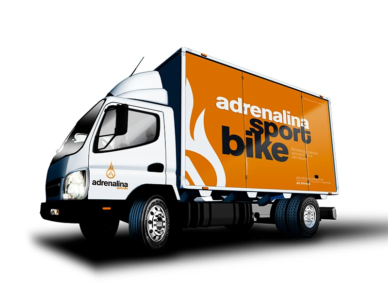
A cor de acento ocupa toda a lateral.
Reconhecimento
nos pequenos detalhes.
Canecas e squeezes recebem versões em preto e laranja, com o símbolo e a tipografia envolvendo a superfície dos objetos. Na caneta, a identidade se concentra em duas assinaturas: o símbolo no corpo e o nome no clipe.
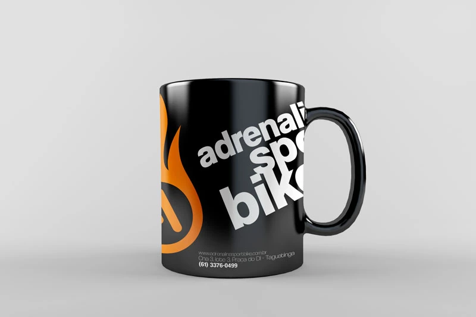
Contraste entre base, símbolo e nome.
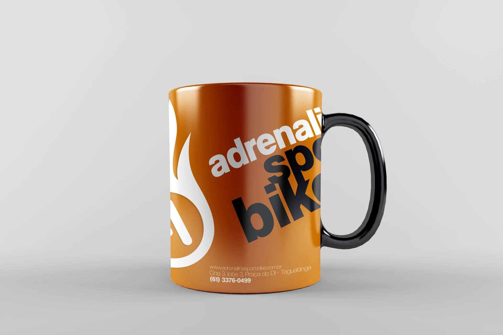
Outra distribuição das cores da identidade.
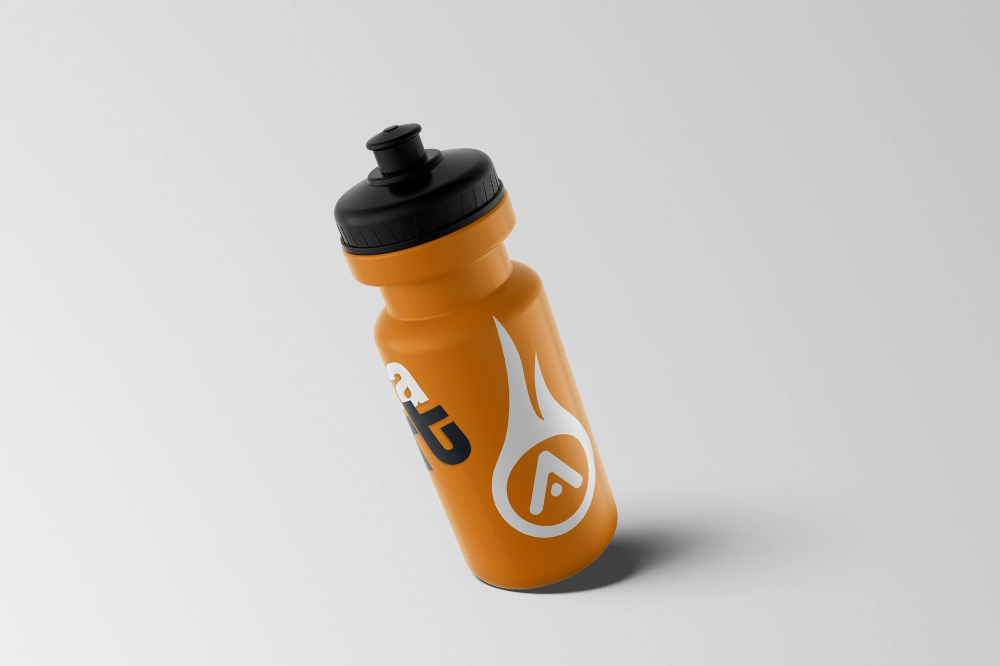
O símbolo envolve a superfície.
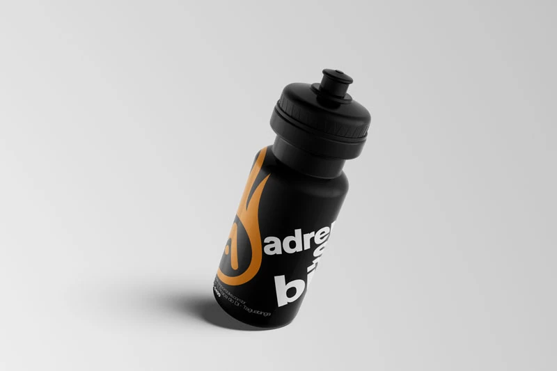
Assinatura e grafismo em conjunto.
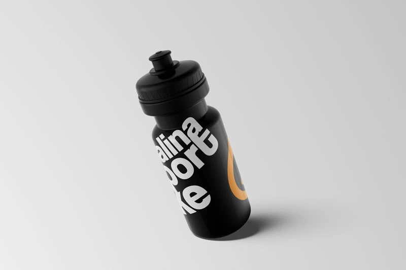
Continuidade da composição tipográfica.
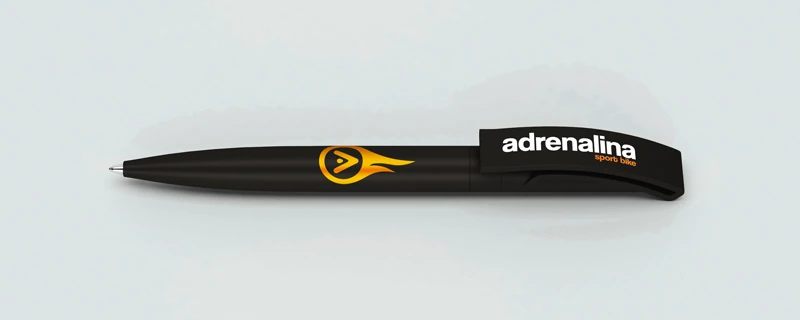
A identidade em uma aplicação compacta.